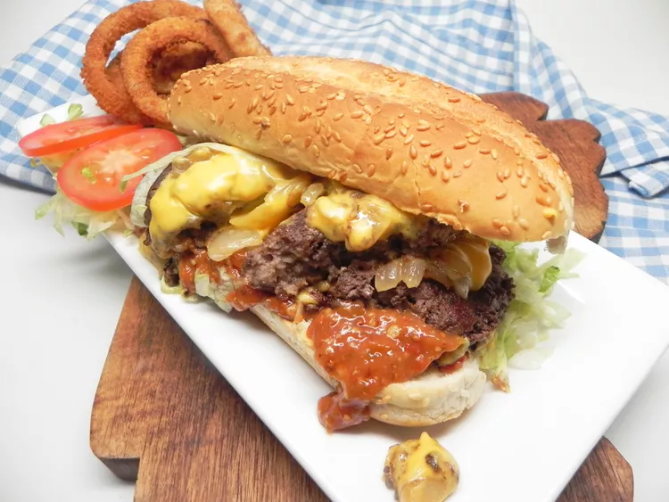

Description
Like a cheeseburger, deconstructed, and somehow way tastier!
Ingredients
2 tablespoons ground mustard
2 tablespoons ketchup
4 pickled cherry peppers, stems removed
1 tablespoon butter
1/4 cup chopped onions
12oz lean ground beef
salt and pepper
3 slices American cheese
2 hoagie rolls, toasted
1 cup shredded iceberg lettuce
1 roma tomato, thinly sliced
Directions
-
Combine mustard, ketchup, and cherry peppers in the bowl of a food
processor. Pulse until smooth.
-
Melt butter in a small skillet over medium-high heat. Sautee onions
until soft and starting to caramelize, then remove from heat.
-
Form beef into two patties and season with salt and pepper. Cook in
skillet under med-high heat until crust forms on bottom, then flip.
-
Chop the meat with spatula after about 3 minutes. Mix with onions. Layer
cheese over beef and cook until melted.
-
Spread mustard sauce on bottom of each hoagie roll. Divide meat between
the sandwiches and top with lettuce and tomato.